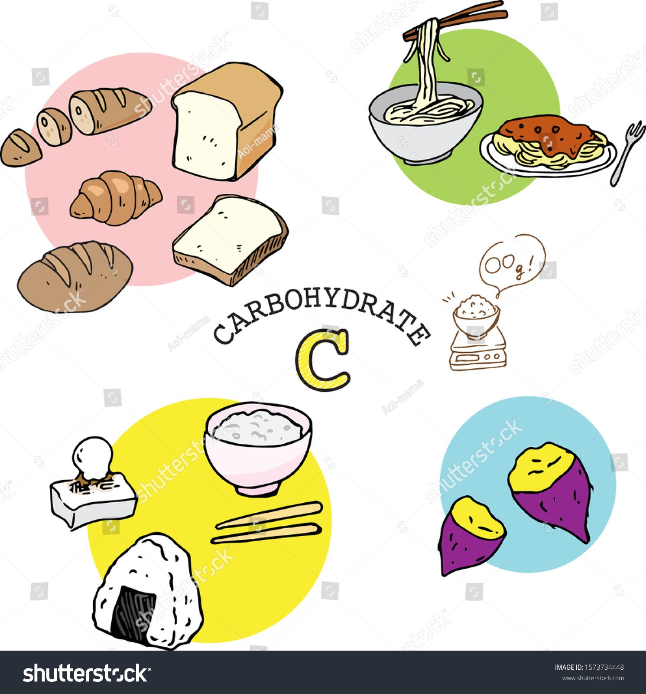

A carbohydrate is a biomolecule consisting of carbon.

Bread
Yam
Flour
Proteins
Protien is a food throughout the body in muscle, bones, skin, hair and virtually every other part of the body or tissue.
Meat
Fish
Egg
Fats and oil
Fats and oils are important energy stores in animals and plants
Palm oils
groundnuts
egusi
Mineral salts
Mineral salts are responsible for structural functions involving the skeleton and soft tissues and for regulatory functions including neuromuscular transmission
Tomatoes
carrot
Pepper
Vitamins
Vitamins and minerals are micronutrients required by the body to carry out a range of normal
Lime
Lemon
Grape
Water
Water is an essential class of food. Living things need water so much for different activities. Pure water that is ideal consumption must be tasteless, colourless and odourless.